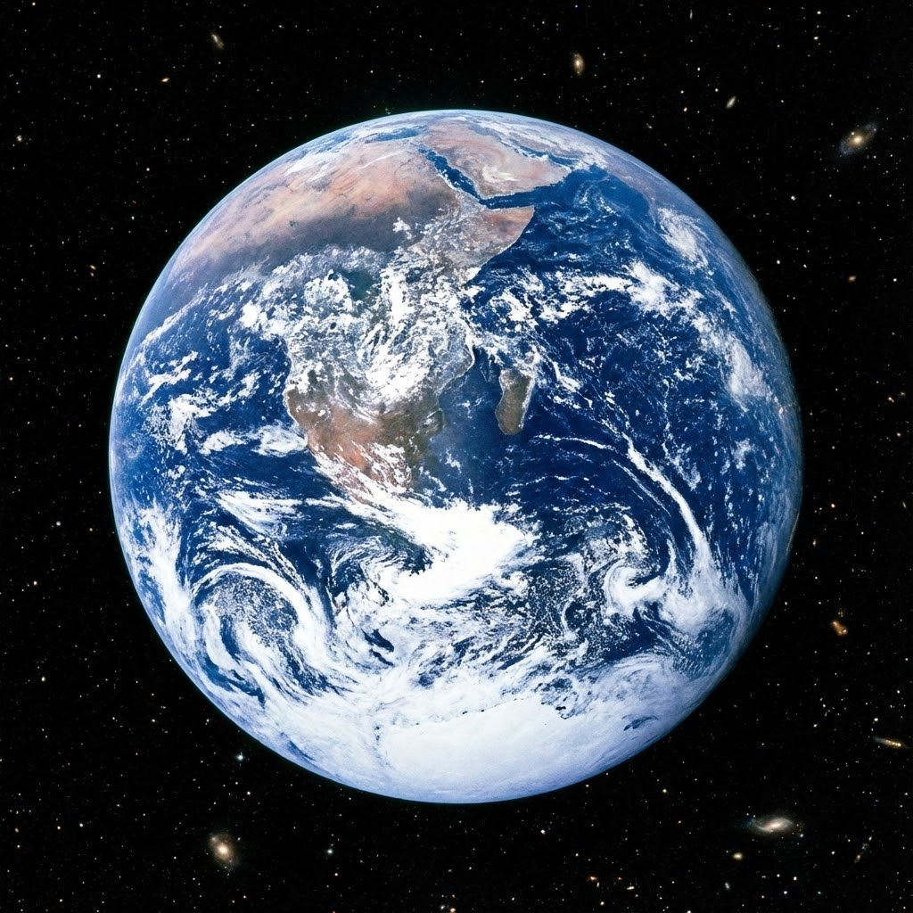

05
我们生活的星球——地球
地理概念：七大洲与四大洋
- 地球表面由七大洲（亚洲、非洲、北美洲等）和四大洋（太平洋、大西洋等）组成。
- 我们现在所在的深圳，就在欧亚大陆的东南部，面向太平洋。
图片描述：蓝色弹珠

“这就是宇航员眼中的家。蓝色是海洋，白色是云朵，看起来是不是像妈妈梳妆台上的弹珠？”
趣味小知识：名不副实的“水球”
- 其实叫它“地球”有点冤枉它，因为它表面71%都是水。
- 如果从太空看，它更像一个蓝色的弹珠或水球。